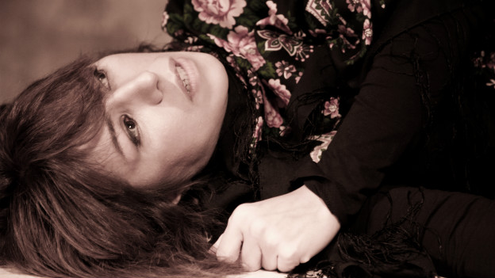
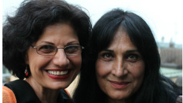
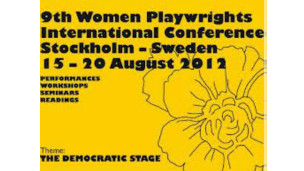

|
|

هنرمندان ایرانی در نهمین کنفرانس بینالمللی زنان نمایشنامهنویس استکهلم
شنبه4 شهریور 1391
بی بی سی: فعالیت هنری برای یک هنرمند، خارج از زادگاه و خاستگاه زبانیاش، چندان آسان نیست. هرچه این فعالیت، مستلزم کار گروهی بیشتر باشد، موفقیت در آن نیز برای هنرمند برونمرزی، دشوارتر و دیریابتر میشود.

فعالیت در حوزه هنرهای نمایشی که مبتنی بر تمرینهای پیدرپی گروهی، سالن مناسب و امکانات تکنیکی مختلف است، بسیار دشوارتر از سایر رشتههای هنری به نظر میرسد. با این حال هستند کسانی که علیرغم دشواریهای موجود و نیاز اقتصادی، جنگیدن در مسیر دلخواه را بر پذیرش شغلهای تحمیلی در کشورهای میزبان، ترجیح دادهاند.
دو تن از زنان نمایشنامهنویس و کارگردان ایرانی که موفق شدهاند در این پهنه دشوار، دوام بیاورند و در خارج از ایران نیز به کار مورد علاقه خود بپردازند، در نهمین کنفرانس بینالمللی زنان نمایشنامهنویس (WPIC) که از ۱۵ تا ۲۱ اوت در استکهلم برگزار شد، به نمایشنامهخوانی و اجرای صحنهای پرداختند: شبنم طلوعی و عزت گوشهگیر.
رقص پاییزی
تم محوری نهمین کنفرانس زنان نمایشنامهنویس در استکهلم، "دموکراسی" بود. بیش از صد نمایشنامهای که حول این محور برای عرضه در کنفرانس انتخاب شده بودند، اغلب توسط بازیگران سوئدی به زبان انگلیسی روخوانی شدند و تنها انگشتشماری از کارها روی صحنه اجرا شد.
نمایشنامه "رقص پاییزی" یکی از آنها بود. شبنم طلوعی- کارگردان و بازیگر سینما و تئاتر ساکن پاریس- در این کار، علاوه بر نویسندگی متن و کارگردانی، در سه نقش نیز ظاهر شد: "بیتا"، "مژده" و "یکتا".
او که در سال ۱۳۸۳ از ایران خارج شده، نمایشنامه خود را در قالب "تکگویی سه زن" تنظیم کرده است. آنها اگرچه تجربیات مختلفی را از سر گذراندهاند، اما رنج ناشی از فشارهای اجتماعی و نبود آزادی، آنها را به همدیگر پیوند داده است.
"رقص پاییزی" پیش از این، شش بار در پاریس، دوبار در پراگ و دوبار در استکهلم اجرا شده و مورد استقبال قرار گرفته است. نکته حائز اهمیت در استکهلم اما این بود که این نمایش، توسط یک مرکز سوئدی و با حضور ترکیبی از مخاطبان ایرانی و غیر ایرانی برگزار شد.
این نمایش به دلیل برجسته بودن جنس "زبان" و "لحن" آن به فارسی اجرا شد؛ البته به جز صحنه آخر که گاهی برخی از حرفهای "یکتا"، فعال سیاسی سابق و معلم رقص کنونی به زبان فرانسه بیان میشد. به همین دلیل ترجمه متن برای استفاده مخاطبان غیر فارسی زبان که شمارشان کم نیز نبود، در دو سوی سالن تئاتر روی دیوار بالانویس میشد.
نمایش با تکگویی "بیتا" هنگام بازجویی آغاز میشود. او روزنامهنگاری سیوچندساله است که در پی اعتراضهای پس از دهمین انتخابات ریاست جمهوری بازداشت شده است. خواهر او "یکتا"، بیش از دو دهه پیش، به دلایل عقیدتی، مدتی را در زندان بوده و سپس از ایران خارج شده است و در تمام این سالها آنها هرگز همدیگر را ندیدهاند.
پناه بر هنر
"بیتا" در بازداشتگاه، هراسان از آزارهای جنسی ماموران حاضر در اتاق، گیج و سردرگم نمیداند اتهامش چیست و از سخنان و تهمتهای بازجو هیچ سر در نمیآورد. قدرت بازیگری شبنم طلوعی در این نمایش، در ارائه مدلی واقعنما از یک روزنامهنگار زن در مقابل بازجو، مثال زدنی است.
وسایل صحنه نمایش، بسیار اندک شمارند و محدود به میز، چمدان، صندلی و بطری ویسکی میشوند. به این ترتیب، مخاطب در طول نمایش، تنها از طریق تکگویی و حالتهای بازیگر میتواند فضا و شخصیتهای فرعیای را که در صحنه حضور عینی ندارند، در ذهن خود بسازد؛ از جمله "وکیل"، "بازجو"، "ماموران زندان"، "کارمندان" و "شاگردان" مرکز رقص در پاریس.
شبنم طلوعی درباره دلیل نزدیک شدن به چنین موضوعی که علاوه بر حوادث اخیر ایران، دهه ۶۰ را نیز دربرگرفته است، میگوید: "من هنوز پس از هشت سال که از مهاجرتم به فرانسه میگذرد، به شدت از حیث روحی در ایران زندگی میکنم و مجموعه اتفاقهایی که در آنجا میافتد و رنجهایی که مردم ایران متحمل میشوند، مانند خیلیهای دیگر، روی من نیز تاثیر میگذارند و رنجم میدهند."
او با اشاره به وقایع پس از دهمین انتخابات ریاست جمهوری در ایران ادامه میدهد: "دیدن آن فیلمها و رنج مردم خیلی مرا آزار داد. در این مدت هم با کسانی آشنا شده بودم که در سالهای نخست پس از پیروزی انقلاب ۵۷ به دلیل اعتقادات و نگاه سیاسیشان در زندان بودند و بعد ناچار شده بودند که از ایران خارج شوند. چه آنها که هنوز فعال سیاسی هستند و چه آنها که از سیاست متنفرند، هنوز بار سنگینی از گذشته بر دوششان هست. همینها باعث شد ناخودآگاه و بدون برنامهریزی قبلی شروع به نوشتن کنم. ظرف چند روز نمایشنامه را نوشتم و سپس با خودم و به تنهایی شروع به تمرین کردم و طی این تمرینها، متن نهایی درآمد."
شخصیت دوم نمایش رقص پاییزی، "مژده"، زنی جوان و تهیدست است که مدتی نیز در دبی تنفروشی کرده است. او در زندان با "بیتا" آشنا شده است و پس از خروج از ایران، پیام وی را به خواهرش "یکتا" میرساند.
"یکتا" اما زنی است بریده از فعالیتهای سیاسی و پناه گرفته در سایه هنر تا به خود فرصت زندگی و نگاه به هستی بدهد. او که در نوجوانی فعال سیاسی بوده است، بیش از دو دهه تلاش کرده است تا گذشته خود را پس بزند؛ فراموش کند. با تماس "مژده" در حین تمرین رقص با شاگردانش اما دوباره آن حیاط پاییزی، درخت خرمالوی بیبرگ و پرباری که شاخههایش روی حوض آبی وسط حیاط سنگینی میکرده در ذهنش بیدار میشود؛ و البته "بیتا"ی پنج ساله را به خاطر میآورد.
شبنم طلوعی موفق میشود با مهارت و تنها با کلام، تصویر باغ زیبایی را در ذهن مخاطب بسازد که در میان ایرانیان، تصویری آشنا و نوستالژیک است؛ تصویر زیبای باغی که با کوبیدن در و هجوم مامورها به درون، از هم پاشیده میشود. یکتا برای گریز از دست مامورها ناچار میشود خواهر خردسال خود را به گوشهای پرت کند و نمایش با این خاطرات تلخ به پایان میرسد؛ خاطراتی که یکتا از شدت هجوم آنها به هنر "پناه" برده است.
"رقص پاییزی"، چهارمین کار شبنم طلوعی در خارج از کشور به شمار میرود. او پیش از این نمایش "مصاحبه" نوشته محمد رحمانیان را در سال ۲۰۰۶ کارگردانی و در آن در نقش دختر، "صفیه"، بازی کرد.
پس از آن، سال ۲۰۰۹ در نقش «مونس» در فیلم "زنان بدون مردان" به کارگردانی شیرین نشاط ظاهر شد و در سال ۲۰۱۰ نیز تئاتر شهر کرفلد در آلمان، نمایشنامه "بهمن – بغداد" را که شبنم طلوعی همراه با امیر آقایی نوشته بود، به مدت یکسال با کارگردانی وی روی صحنه برد.

نام من ایناناست
۲۶۰ هنرمند و منتقد هنری از ۴۶ کشورجهان در نهمین کنفرانس بینالمللی زنان نمایشنامهنویس در استکهلم حضور داشتند تا در کنفرانسها، سمینارها و مناظرههای آن شرکت کنند و این فرصت خوبی برای برنامهریزیهای فرهنگی بود.
نمایشنامه "اسم من ایناناست" نوشته عزت گوشهگیر نیز ازجمله آثاری بود که توسط یکی از تهیهکنندگان سوئدی حاضر در کنفرانس یادشده برای اجرای صحنهای در مهمترین مرکز تئاتری سوئد – دراماتن- انتخاب شد.
عزت گوشهگیر- داستاننویس، نمایشنامهنویس و کارگردان ساکن شیکاگو- در پرورش شخصیت زن نمایشنامه خود "اینانا"، از ایزدبانوی عشق، باروری و قدرت الهام گرفته است. خودش میگوید شخصیت زن این نمایشنامه را در واکنش به تصویر زن ایرانی در رسانههای غربی نوشته و تلاش کرده با الهامگیری از این اسطوره، تصویری دقیق از زن ایرانی بدهد که به عقیده وی، "چه قبل و چه بعد از انقلاب قدرتمند بوده است".
«اینانا» در داستان این نمایشنامه، در دهه ۶۰ به دلایل عقیدتی و سیاسی، مدتی را در زندان میگذراند و پس از خروج از زندان، به آمریکا میرود و آنچا پناهنده میشود. این زن پس از واقعه ۱۱ سپتامبر سال ۲۰۰۱ و سپس حمله آمریکا به عراق و افغانستان، در چند تظاهرات ضد جنگ علیه آمریکا شرکت میکند و بازداشت میشود. او در بازداشتگاه در ذهن خود به گذشته و به دوران زندان در ایران سفر میکند و مخاطب با زندگی او و شرایط دهه ۶۰ در ایران آشنا میشود.
چالش با جامعه
نمایشنامه "نام من ایناناست" توسط بازیگری سوئدی به زبان انگلیسی در نهمین کنفرانس بینالمللی زنان نمایشنامهنویس روخوانی شد.
عزت گوشهگیر در کارهای خود بیشتر به زنان و تجربیات زنانه اشاره دارد. او در این زمینه میگوید: "وقتی به آمریکا آمدم مانند بسیاری از هم نسلانم در حیطههای مختلف زندگی تجربههایی داشتم که دلم میخواست آن را با دیگران تقسیم کنم: کار در فضای فرهنگی بعد از انقلاب، همزمان زندگی مخفی سیاسی، جنگ، ترسها و دلهرهها و انواع فشارهای اجتماعی که زندگی را برای زنان دشوار میکرد ازجمله مسائلی است که ناخودآگاه در آثارم سرریز میکند."
به عقیده این نمایشنامهنویس، همه این تجربیات دشوار زندگی، از زن ایرانی یک زن قدرتمند ساخته که پیوسته در چالش با خود و جامعه است.
نمایشنامه "نام من ایناناست" به شیوه تکگویی نوشته شده و تا به حال در آمریکا توسط نویسنده و در پکن توسط یک کارگردان چینی به روی صحنه رفته است.
عزتگوشهگیر درباره دلیل انتخاب فرم تکگویی در این اثر میگوید: "در کل در آمریکا هنر تئاتر از سوی دولت حمایت نمیشود و بیشتر کمپانیهای مختلف هستند که این حمایتها را پیش میبرند. به دلیل کمبود این حمایتهای مالی، اغلب نمایشها یک نفره یا دونفره برگزار میشود و امروز میبینیم که موجی از این کارها بخصوص در آمریکا در جریان است. نمایشهایی که چند بازیگر دارند معمولا حامیان مالی بزرگ دارند."
او فعالیت برای هنرمندان مهاجر و تبعیدی را در چنین شرایطی بسیار دشوارتر میداند و معتقد است: "در میان هنرهای مختلف، هنر نمایش به دلیل ویژگیهایی که دارد نیاز به حمایت مالی دارد و به همین دلیل، به سختی میتواند حتی برای هنرمندان غیر مهاجر در آمریکا به حرفه فرد به معنای محل کسب درآمد تبدیل شود. در چنین شرایطی وضعیت هنرمند تبعیدی به مراتب سختتر میشود."
عزتگوشهگیر که علاوه بر نمایشنامه، شعر و داستان نیز مینویسد، تا به امروز حدود ۲۰ نمایش به زبان انگلیسی و بیش از ۲۰ نمایش به زبان فارسی نوشته است که بیشتر آنها اجرای صحنهای یا روخوانی شدهاند. از آن جمله است: "آیینههای روبرو"، "حاملگی مریم"، "قرهالعین" و "فروغ فرخزاد".
علاوه بر شبنم طلوعی و عزت گوشهگیر که در سنین بالای سی سال فعالیت هنری در خارج از کشور را از سر گرفتهاند، ساناز بیان، نمایشنامهنویس و کارگردان نیز از ایران با نمایشنامهای با عنوان "مستند" در کنفرانس بینالمللی زنان نمایشنامهنویس سوئد شرکت داشت.
این نمایشنامهنویس که سال گذشته نمایش "خانه عروسک" را در شهر روزنبرگ نروژ اجرا کرده بود، در نمایشنامه "مستند" با بهرهگیری از چند حادثه مستند در ایران، به چند زن مجرم پرداخته است؛ ازجمله زنی که همسر اول مرد مورد علاقه خود را میکشد یا زنی که برای دفاع از خود مرتکب قتل یک مرد میشود.
نسیم عقیلی (کارگردان تئاتر که در سوئد زاده شده است)، و بیانکا باقاتوریان (کارگردانی که از ده سالگی در آمریکا زندگی میکند و فارسی را به سختی حرف میزند) از دیگر هنرمندان ایرانی حاضر در این کنفرانس بودند و نمایشنامهای از آنها به زبان انگلیسی برای شرکتکنندگان در کنفرانس روخوانی شد.

سه زن هنرمند افغان
سه هنرمند جوان افغان، در نهمین کنفرانس زنان نمایشنامهنویس در استکهلم حضور داشتند و کارهای خود را روی صحنه بردند.
این سه هنرمند که از یک خانواده بودند، "منیره"، "طاهره" و "مهدیه هاشمی" نام داشتند. "ماسکهای زیر برقع" کار منیره و "دیوار" کار طاهره بود و خواهر کوچکتر مهدیه، یک ترانه رپ را روی صحنه اجرا کرد. حلیمه خواهر چهارم آنها نیز در تمام این کارها در کارهای تکنیکی مثل نور و صدا آنها را همراهی میکرد.
آنها که در یک خانواده اهل فرهنگ بزرگ شده اند، در کارهای ارائه شده خود در استکهلم روی مسائل زنان در افغانستان و فشار جامعه مردسالار درنگ کرده بودند.
ناصر یوسفی، ژورنالیست و کارگردان تئاتر ساکن استکهلم معتقد است با توجه به شرایط ویژه افغانستان و نبود آزادی برای زنان، این سه هنرمند هنرهای نمایشی افغانستان، مضامین جسورانهای را برای کار انتخاب کرده بودند.
او میگوید: علاوه بر اینکه سویه انتقادی آثار آنها تماشاگر را جذب میکرد، از حیث تکنیک کار نیز، هم نمایش دیوار و هم نمایش ماسکهای زیر برقع، موفق شدند که مخاطب را روی صندلی نگهدارند.
این ژورنالیست با تاکید بر اینکه نمیشود آثار هنرمندان خاورمیانهای را خارج از موقعیت و مشکلات فرهنگی و سیاسی منطقه ارزیابی کرد ادامه داد: "با درک این موقعیت باید گفت کار این سه هنرمند جوان موفق و نشاندهنده چالشی فرهنگی با جامعه افغانستان بود. در افغانستان هم سانسور هست و هم هیچ حمایتی از هنرمندان از سوی دولت نمیشود. در چنین شرایطی کار نمایشی، آسان نیست."
آزادی در حرکات بدن
منیره هاشمی خواهر بزرگ است و در نمایش "ماسکهای زیر برقع" از زنان در افغانستان میگوید و از رنجهایی که متحمل میشوند؛ و اینکه چگونه قابلیتهای نیمی از جامعه، زیر فشار فرهنگ مردسالاری سرکوب میشود.
او که خود بازیگر این نمایش بود، روایت خود را با همراهی سه رقصنده- فریبا باقری، زهرا مهدوی و راحله رضایی- تکمیل میکرد. او به رقصهای بومی افغانستان فرمی امروزین داده بود تا حرفهای بازیگر اصلی نمایش را همراهی کنند.
به عقیده سوسن تسلیمی، بازیگر و کارگردان ایرانی ساکن در سوئد، این دختران جوان رقصنده در "آزادی حرکات بدن" و "بیان اندیشه نمایش"، موفق بودند و در "پیچیدگی رقص و رنج زنان افغانستان"، به زیبایی با مخاطب ارتباط میگرفتند.
منیره هاشمی در شرکت "سیمرغ فیلم" با سرپرستی عبدالحکیم هاشمی در هرات فعالیت میکند و تا به امروز در مقام بازیگر در چند فیلم بازی کرده است. طاهره و حلیمه و مهدیه در گروه هنری پاپیروس فعال هستند و در کابل زندگی میکنند.
شاید مرگ رهایی است
طاهره هاشمی ۲۱ سال دارد. او نیز در نمایش تک نفره "دیوار"، در مقام بازیگر حضور داشت. او نقش زنی خانهدار را بازی میکرد محصور در چهادیواری اما عاشق آوازخوانی.
او در رویا خود را زنی موفق میدید، اما به مرور چهاردیواری خانه آنقدر به او فشار آورد که در نهایت تنها با مرگ رها شد. او در زندگی پس از مرگ، به آرزوی خود رسید و فرشتهای آوازخوان شد.
سوسن تسلیمی، درباره کار این سه هنرمند جوان میگوید: "به یک اثر هنری میشود از چند زاویه نگاه کرد. باید هم بستر سیاسی و اجتماعی و هم بستر هنری آن را دید. کشور افغانستان بیش از چهل سال است که درگیر جنگهای متعدد است. ملت ستمدیده افغانستان کمتر اجازه داشتهاند تا به رشد هنری خود فکر کنند، اما با این حال بخصوص در زمینه هنر آواز و موسیقی آثار برجستهای را عرضه کردهاند. هنر نمایش اما نیاز به کار جمعی، حمایت دولتی و تمرین و ممارست فراوان گروهی دارد. در یک کشور بحران زده که با دموکراسی بیگانه است، کارهای جمعی به سختی پیش میرود و هنرمندان در کارهای فردی موفقتر هستند."
به عقیده وی، کار این سه دختر جوان هنرمند آنقدر قوی بود که توانست کمبود وسایل صحنه آنها را که به دلایلی فراهم نشده بود تحت الشعاع قرار دهد.
سوسن تسلیمی توضیح میدهد که کارگردان در قطعه نمایشی "دیوار"، از سبک کلاون سیرک استفاده کرده بود که در اروپا یک رشته اختصاصی بازیگری است و ورود به دانشگاه برای تحصیل در این رشته چندان آسان نیست: "اما این دختر جوان به خوبی از عهده آن برآمد. در فرهنگ خاورمیانه و هم ایران، از دلقک و دلقکبازی به عنوان نکتهای منفی یاد میشود، اما این هنرمند در بهرهگیری از این سبک هم جسارت داشت و هم در اجرای آن از حیث تکنیکی هنرمندانه ظاهر شد و توانست حقایقی تلخ را با لباس شوخی و طنز به مخاطب خود منتقل کند."
طاهره هاشمی برای یادگیری این رشته بازیگری هیچ تعلیمی ندیده است. مهدیه کوچکترین خواهر این خانواده فرهنگی که ۱۷ سال دارد با یک ترانه رپ که بازهم به رنج زنان افغانستان اشاره داشت روی صحنه رفت.
کنفرانس بینالمللی زنان نمایشنامهنویس، با هدف حمایت از زنان نویسنده و آشنایی با فرهنگهای دیگر در عرصه هنر نمایش، از سال ۱۹۸۸ در بوفالوی آمریکا پایهگذاری شده است و از آن زمان تا به امروز، هر سه سال یکبار، با برنامههای مختلفی چون سخنرانی، بحث و روخوانی نمایشنامه و اجرای صحنهای در کشورهای مختلف برگزار میشود.
این کنفرانس تا به امروز در کشورهای آمریکا، کانادا، استرالیا، فیلیپین، یونان، هند، مالزی و سوئد برگزار شده و قرار است سه سال بعد در آفریقای جنوبی برگزار شود.